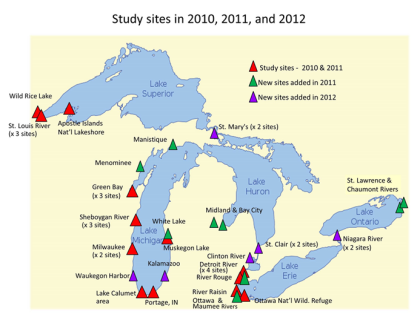

Birds as Indicators of Contaminant Exposure in the Great Lakes
Template #80

This project identifies significant sources and impacts of historical and newly emerging toxics to the Great Lakes ecosystem through broad surveillance as well as laboratory and field research of tree swallows and other bird species. U.S. Geological Survey determines the amount of exposure to and the effects of historical and emerging contaminants in Great Lakes food chains. The data provides guidance and information to regulators on removal of Beneficial Use Impairments at Area of Concern sites around the Great Lakes.
USGS is quantifying exposure and effects of both legacy contaminants and emerging contaminants at Areas of Concern (AOCs) across the Great Lakes. In order to evaluate metaboliomic patterns among sites, work is underway to merge those results with contaminant results from the same samples. When completed, these results will be a powerful tool to assess additional types of contaminant effects on wildlife and will provided important BUI assessment information to States and EPA.
This information on effects of those chemical contaminants is directly applicable to two Beneficial Use Impairments (BUIs) for wildlife and is being used by States and EPA in their BUI assessments and reports. This information can also be used by decision makers to further prioritize watersheds for restoration, and is providing important metrics to measure the success of restoration and remediation activities that are ongoing or planned. Comparisons among sites, as well as to sites across the U.S. and Canada, will allow for better and more rigorous assessments of the effects of chemical contaminants on the health of the Great Lakes as a whole and at individual AOCs. This project is being conducted in close collaboration with EPA, NOAA, FWS, and State governments. By the end of this project, the resulting data set will be among the most comprehensive available for avian contaminants in a specific geographic region. A partnership has been initiated among EPA (ORD, Cincinnati, OH); USGS, Fort Collins, CO; and USGS, UMESC, WI to evaluate trophic level responses to PCB contamination at two AOCs (Manistique, MI and Ottawa River, OH). This partnership will enhance our ability to project exposure and effects throughout the food web and to provide additional information and techniques applicable to other AOCs.
Work funded during the first 3 years of the study has provided valuable and heretofore unavailable information, quantifying the distribution of both organic and inorganic contaminants in the same matrix (tree swallow eggs) across all AOCs and nearby reference areas. To date, detailed information has been collected at 45 study sites encompassing AOCs across all Great Lakes. EPA scientists (ORD, Athens, GA) completed metabolomic analyses of tree swallow tissues collected in 2011 by Project 80. Organic analyses from 2012 collections were completed and results are being converted to usable formats. Preliminary summaries of 2012 information have been made available to State AOC coordinators and public advisory organizations including the Fox River/Green Bay AOC, Waukegan AOC, Niagara River AOC, Menominee River AOC, Saginaw River AOC, Manistique River AOC, and Sheboygan River AOC
The web site established for GLRI Project 80: (http://www.umesc.usgs.gov/wildlife_toxicology/glri_project80.html).
A summary of Project 80 results was presented on the Huron-Erie Corridor Research vessel meeting in August 2012. This was a meeting of stakeholders and scientists from all along the Huron-Erie Corridor that encompasses two AOCs (St. Clair and Detroit Rivers) primarily, but the Clinton and Rouge Rivers AOCs were also represented.
Chris Custer participated remotely, via poster, handouts, and video, at the Manistique River AOC open house and public meeting in August 2012. Public meetings are an important venue to reach a diverse audience and provide important access to GLRI Project 80 preliminary information.
A poster was presented on Project 80 at the U.S. Areas of Concern meeting in Cleveland, OH in September 2012. Christine Custer also co-led the Bird or Animal Deformity or Reproductive Problem BUI workshop.
Two presentations summarizing Project 80 results were given at the 33rd Annual Environmental Toxicology and Chemistry meeting in Long Beach, CA, November 2012.
Video link to WI swallow presentation produced by the Wisconsin Department of Natural Resources (http://www.umesc.usgs.gov/wildlife_toxicology/glri_project80.html).
Thomas W. Custer, tcuster@usgs.gov
608-781-6375
Christine M. Custer, ccuster@usgs.gov
608-781-6237
Jack B. Waide, jwaide@usgs.gov
608-781-6269